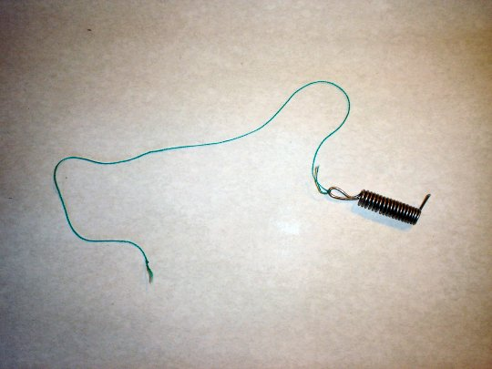

Activitatea experimentală 5-1
Activitatea experimentală 5-1
Măsoară căldura specifică a aliajului de lipit. Lucrează în echipă.
Pasul 1. Măsuraţi masa şi lungimea unui fir lung de aliaj de lipit. Calculaţi masa unităţii de lungime. Tăiaţi lungimea corespunzătoare unei mase de 50 g şi înfăşuraţi−o pe un creion rotund. Formaţi un cârlig la un capăt al înfăşurării si legaţi de cârlig un fir de aţă lung de aproximativ 30 cm, ca în figura 5−2.

Figura 5-2. Proba de aliaj de lipit.
Pasul 2. Turnaţi într−un termos o cantitate de apă cu masa 100 g şi măsuraţi temperatura apei la echilibru termic cu termosul.
Pasul 3. Puneţi proba de aliaj de lipit într−un pahar de sticlă termorezistentă, plin cu apă. Treceţi firul de aţă peste marginea paharului, astfel încât să puteţi scoate proba trăgând de fir. Folosiţi un încălzitor cu imersie şi aduceţi apa la fierbere. Astfel veţi şti temperatura probei când apa fierbe: 100°C (presupunând că presiunea atmosferică este cea normală).
Pasul 4. Când apa fierbe, scoateţi proba din apă (ţinând de capătul liber al firului de aţă) şi cufundaţi−o repede în apa din termos. Notaţi temperatura la care se stabileşte echilibrul termic. Recuperaţi aliajul de lipit − acesta poate fi folosit în proiectele viitoare, nefiind afectat de "tratamentul" la care l−aţi supus.
Pasul 5. Aplicaţi principiile calorimetriei şi determinaţi căldura specifică a aliajului de lipid. Comparaţi rezultatul obţinut cu cele obţinute de celelalte echipe. Analizaţi sursele de erori care ar fi putut afecta rezultatul şi faceţi propuneri pentru creşterea acurateţii determinării.